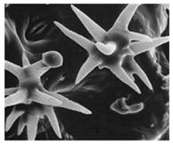
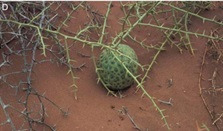
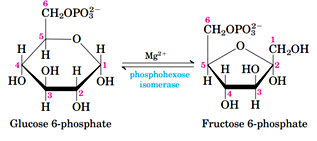

Royal jelly is used in which form? रॉयल जैली का प्रयोग किस रूप में किया जाता है?
AFreeze-dried form फ्रीीज-ड्रााय रूप
BLiquid form तरल रूप
CCrystal form क्रिस्टल रूप
DSolid form ठोस रूप
EXPLANATIONCorrect Answer: A
The correct answer is A because it matches the definition: Freeze-dried form फ्रीीज-ड्रााय रूप .
Question 27ID: 2615988Page: 434
To remove the effects of absolute kidney size, medullary thickness is expressed as a ratio of kidney size. This ratio is called_________. पूर्ण गुर्दे के आकार के प्रभावों को दूर करने के लिए, गुर्दे की मोटाई को गुर्दे के आकार के अनुपात के रूप में व्यक्त किया जाता है। इस अनुपात को _________ कहा जाता है।
The correct answer is C because it matches the definition: Relative medullary thickness सापेक्ष अंतस्था मोटाई .
Question 28ID: 2615989Page: 435
The medullary interstitial fluids consist of a high amount of ____________. मेडुलरी इंटरस्टिशियल फ्लुइड्स में अधिक मात्राा में ___________ होता हैं।
ANaCl सोडियम क्लोोराइड
Bकार्बन डाइआक्सााइड
Cऑक्सीीजन
DKCl पोटेशियम क्लोोराइड
EXPLANATIONCorrect Answer: A
The correct answer is A because it matches the definition: NaCl सोडियम क्लोोराइड .
Question 29ID: 2616003Page: 435
What is the second phase of glycolysis called? ग्लााइकोलिसिस की द्वितीय अवस्था क्याा कहलाती है?
APreparatory phase प्रिपेटरी चरण
BPayoff phase पेऑफ चरण
CTerminal phase टर्मिनल चरण
DReverse phase रिवर्स चरण
EXPLANATIONCorrect Answer: B
The correct answer is B because it matches the definition: Payoff phase पेऑफ चरण .
Question 30ID: 2616013Page: 435
At the end of the exergonic process of glycolysis, how many molecules of NADH are generated by the degradation of four molecules of glucose? ग्लााइकोलाइसिस की एक्सर्जोनिक प्रक्रिया के अंत में, ग्लूकोज के चार अणुओं के क्षरण से NADH के कितने अणु उत्पन्न होते हैं?
A16 16
B2 2
C4 4
D8 8
EXPLANATIONCorrect Answer: D
The correct answer is D because it matches the definition: 8 8 .
Question 31ID: 2616023Page: 436
Coelom in hemichordates is divided into_______. हेमीकॉर्डेट्स में सीलोम को _______ में विभाजित किया गया है।
AEctocoel, mesocoel and endocoel एक्टोोसील, मेसोसील और एंडोसील
BProtocoel, mesocoel and metacoel प्रोोटोसील, मेसोसील और मेटासील
CProtocoel, metacoel and endocoel प्रोोटोकोल, मेटासील और एंडोसील
DEctocoel, mesocoel and metacoel एक्टोोसील, मेसोसील और मेटासील
EXPLANATIONCorrect Answer: B
The correct answer is B because it matches the definition: Protocoel, mesocoel and metacoel प्रोोटोसील, मेसोसील और मेटासील .
Question 32ID: 2616038Page: 436
In which order, small gnawing mammals are classified? छोटे कुतरने वाले स्तनधारियों को किस क्रम में वर्गीकृत किया गया है?
APholidota फोलिडोटा
BCetacea सिटेसिया
CRodentia रोडेंटिया
DPrimates प्रााईमेट्स
EXPLANATIONCorrect Answer: C
The correct answer is C because it matches the definition: Rodentia रोडेंटिया .
Question 33ID: 2616053Page: 436
The study of the relevance of major developmental regulation genes for understanding the emergence of new body plans and thus new macroevolutionary trajectories is de नई शरीर योजनाओं के उद्भव को समझने के लिए प्रमुख विकासात्मक विनियमन जीन की प्राासंगिकता का अध्ययन और इस प्रकार नए मैक्रोोइवोल्यूशनरी ट्रैजेक्टोोरियों को ____ के रूप में परिभाषित किया गया है।
AEvolutionary developmental biology विकासवादी विकास संबंधी जीव विज्ञाान
BPalaeontology जीवाश्मिकी
CPopulation genetics जनसंख्याा आनुवंशिकी
DComparative genomics तुलनात्मक जीनोमिक्स
EXPLANATIONCorrect Answer: B
The correct answer is B because it matches the definition: Palaeontology जीवाश्मिकी .
Question 1ID: 2612943Page: 591
Light-driven production of ATP by chloroplasts is known as___________. क्लोोरोप्लाास्ट द्वाारा एटीपी के प्रकाश-संचालित उत्पाादन को ___________ के रूप में जाना जाता है।

APhoto oxidation फोटो ऑक्सीीकरण
BPhoto phosphorylation फोटो फास्फाारिलीकरण
CPhoto respiration फोटो श्वसन
DPhoto trimerization फोटो ट्रिमराइजेशन
EXPLANATIONCorrect Answer: B
The correct answer is B because it matches the definition: Photo phosphorylation फोटो फास्फाारिलीकरण .
Question 2ID: 2612956Page: 591
Identify the type of trichome in given figure. दी गई आकृति में ट्रााइकोम के प्रकार की पहचान कीजिए।
ASunken glandular trichomes धँसी हुई ग्रंथि संबंधी ट्रााइकोम्स
BShort non-glandular trichomes छोटी गैर-ग्रंथियों वाले ट्रााइकोम्स
CTwo highly-branched trichomes, one with a small gland at the end of one branch दो अत्यधिक शाखित ट्रााइकोम्स, एक शाखा के अंत में एक छोटी ग्रंथि के साथ
DLong non glandular trichome लंबी गैर ग्रंथियों वाली ट्रााइकोम
EXPLANATIONCorrect Answer: C
The correct answer is C because it matches the definition: Two highly-branched trichomes, one with a small gland at the end of one branch दो अत्यधिक शाखित ट्रााइकोम्स, एक शाखा के अंत में एक छोटी ग्रंथि के साथ .
Question 3ID: 2612971Page: 592
What are the two main factors to be considered while using ethnobotanical plants? एथ्नोबोटैनिकल पौधों का उपयोग करते समय किन दो मुख्य कारकों पर विचार किया जाना चाहिए?
AEfficacy and safety प्रभावकारिता और सुरक्षाा
BCost and packaging लागत और पैकेजिंग
CHigher production and packaging उच्च उत्पाादन और पैकेजिंग
DLonger shelf life and cost लंबी शैल्फ लाईफ और लागत
EXPLANATIONCorrect Answer: A
The correct answer is A because it matches the definition: Efficacy and safety प्रभावकारिता और सुरक्षाा .
Question 4ID: 2612993Page: 592
___________has been described as the science, technology, and business associated with intensive plant production for human use. ___________ को मानव उपयोग के लिए गहन संयंत्र उत्पाादन से जुड़े विज्ञाान, प्रौौद्योोगिकी और व्यवसाय के रूप में वर्णित किया गया है।
AGreenhouse ग्रीीन हाउस
BTissueculture उत्तक संवर्धन
CHorticulture बागवानी
DAquaculture मत्स्य पालन
EXPLANATIONCorrect Answer: C
The correct answer is C because it matches the definition: Horticulture बागवानी .
Question 5ID: 2613003Page: 592
In the deciduous species of temperate areas, reproduction starts in which phase? समशीतोष्ण क्षेत्रोंों की पर्णपाती प्रजातियों में प्रजनन किस चरण में शुरू होता है?
ATransition phase संक्रमण चरण
BMaturation phase परिपक्वता चरण
CGermination phase अंकुरण चरण
DElongation phase बढ़ााव चरण
EXPLANATIONCorrect Answer: A
The correct answer is A because it matches the definition: Transition phase संक्रमण चरण .
Question 6ID: 2613017Page: 593
Which method is the only one that can be used for the transformation of chloroplasts and mitochondria? क्लोोरोप्लाास्ट और माइटोकॉन्ड्रिया के रूपांतरण के लिए कौन सी एकमात्र विधि का उपयोग किया जाता है?

AIn-situ hybridisation इन-सीटू संकरण
BParticle bombardment कण बमबारी
CFreezing and thawing हिमीकरण और पिघलना
DElectric shock बिजली का झटका
EXPLANATIONCorrect Answer: B
The correct answer is B because it matches the definition: Particle bombardment कण बमबारी .
Question 7ID: 2613033Page: 593
The given below figure is a response to high temperature, what kind of response is being showcased? नीचे दिया गया चित्र उच्च तापमान की प्रतिक्रिया है, किस प्रकार की प्रतिक्रिया प्रदर्शित की जा रही है?
APinnate shoot पीनेट शूट
BPhotosynthetically active shoot फोटोकेमिकली सक्रिय शूट
CSmall leaves छोटे पत्ते
DLarge leaves बड़े पत्ते
EXPLANATIONCorrect Answer: B
The correct answer is B because it matches the definition: Photosynthetically active shoot फोटोकेमिकली सक्रिय शूट .
Question 8ID: 2613042Page: 594
The __________is an indispensable apparatus used for a quick inspection of botanical materials and is sometimes referred to as dissecting microscope. __________ वनस्पति सामग्रीी के त्वरित निरीक्षण के लिए उपयोग किया जाने वाला एक अनिवार्य उपकरण है और इसे कभी-कभी विदारक सूक्ष्मदर्शी कहा जाता है।
The correct answer is D because it matches the definition: Stereo microscope स्टीीरियो माइक्रोोस्कोोप .
Question 9ID: 2613053Page: 594
Who proposed the removal of fungi into a separate kingdom? कवक को अलग जगत में हटाने का प्रस्तााव किसने दिया?
AAmerican biologist Robert H. Whittaker अमेरिकी जीवविज्ञाानी रॉबर्ट एच. व्हिटेकर
BKarl Woes कार्ल वोस
CSalmon Pattison सेलमन पैटीसो
DJhon Kennedy जॉन कैनेडी
EXPLANATIONCorrect Answer: A
The correct answer is A because it matches the definition: American biologist Robert H. Whittaker अमेरिकी जीवविज्ञाानी रॉबर्ट एच. व्हिटेकर .
Question 10ID: 2613068Page: 594
___________is brought about by the concentrated runoff of water and, where conditions of slope and soil are favourable, results in the formation of deeper and deeper gullies, which eventually render the area unfit for agriculture for all time. ___________ पानी के केंद्रित अपवाह के कारण होता है और जहां ढलान और मिट्टीी की स्थिति अनुकूल होती है, वहां गहरी और गहरी नालियां बनती हैं, जो अंततः क्षेत्र को हमेशा के लिए कृषि के लिए अनुपयुक्त बना देती हैं
ASheet erosion शीट का क्षरण
BGully erosion गली अपरदन
CDrought सूखा
DFamine अकाल
EXPLANATIONCorrect Answer: B
The correct answer is B because it matches the definition: Gully erosion गली अपरदन .
Question 11ID: 2613082Page: 595
Which of the following is an oats species? निम्न में से कौन सी ओट्स की प्रजाति है?
AAvena sativa एवेना सैटिवा
BAndropogon Sorghum एंड्रोोपोगोन सोरघम
CSecale cereale सेकले केरेले
DSetariaitalica सेटरियाइटालिका
EXPLANATIONCorrect Answer: A
The correct answer is A because it matches the definition: Avena sativa एवेना सैटिवा .
Question 12ID: 2615916Page: 595
Gastrin in the stomach is secreted by which cells? आमाशय में गैस्ट्रिन का स्रााव किन कोशिकाओं द्वाारा होता है?
AKupffer cells कुफ़्फ़र कोशिकाएँ
BG cells जी (G) कोशिकाएं
CPancreatic cells अग्न्यााशय कोशिकाएं
DLeydig’s cells लेडिग की कोशिकाएँ
EXPLANATIONCorrect Answer: B
The correct answer is B because it matches the definition: G cells जी (G) कोशिकाएं .
Question 13ID: 2615923Page: 595
Which phase follows the menstrual phase? मासिक धर्म के बाद कौन-सा चरण आता है?
ALuteal phase ल्यूटल चरण
BFollicular phase फ़ॉॉलिक्यूलर चरण
CSecretory phase स्राावी चरण
DProliferative phase प्रोोलिफेरेटिव चरण
EXPLANATIONCorrect Answer: D
The correct answer is D because it matches the definition: Proliferative phase प्रोोलिफेरेटिव चरण .
Question 14ID: 2615938Page: 596
Within a hierarchy, an ‘__________’ individual is dominant to all the others in the group. एक पदानुक्रम के भीतर, एक '__________' व्यक्ति समूह में अन्य सभी पर हावी होता है।
ABeta बीटा
BKappa कापा
CLambda लैम्ब्डा
DAlpha अल्फाा
EXPLANATIONCorrect Answer: D
The correct answer is D because it matches the definition: Alpha अल्फाा .
Question 15ID: 2615974Page: 596
Amoeba moves from place to place by means of finger-like protrusions of the body, known as _________. अमीबा एक स्थान से दूसरे स्थान पर शरीर के उँगली जैसे उभार के द्वाारा चलता है, जिसे _________ के रूप में जाना जाता है।
AVili विली
BVacuoles रिक्तिकाएं
CEndoplasm एंडोप्लााज्म
DPseudopodia स्यूडोपोडिया
EXPLANATIONCorrect Answer: D
The correct answer is D because it matches the definition: Pseudopodia स्यूडोपोडिया .
Question 16ID: 2615990Page: 596
Amino acids polymerise to form protein. During this polymerization they lose a water molecule after which they are recognised as ___________. प्रोोटीन बनाने के लिए अमीनो एसिड पोलीमराइज़ होते हैं। इस पोलीमराइजेशन के दौरान वे एक पानी के अणु को खो देते हैं जिसके बाद उन्हें ___________ के रूप में पहचाना जाता है।
AResidue परिशिष्ट
BBiogenic amines बायोजैनिक अमाईन्स
CAmides एमाइड्स
DRelics अवशेष
EXPLANATIONCorrect Answer: A
The correct answer is A because it matches the definition: Residue परिशिष्ट .
Question 17ID: 2616004Page: 597
Which step of glycolysis is depicted in the figure given below? नीचे दिए गए चित्र में ग्लााइकोलाइसिस के किस चरण को दर्शाया गया है?

AFirst पहला
BSecond दूसरा
CThird तीसरा
DFourth चौथा
EXPLANATIONCorrect Answer: B
The correct answer is B because it matches the definition: Second दूसरा .
Question 18ID: 2616024Page: 597
Where is the notochord present in urochordates? यूरोकॉर्डेट्स में नोटोकॉर्ड कहाँ मौजूद होता है?
AOnly in larval tail केवल लारवल पूंछ में
BIn the abdominal region उदर क्षेत्र में
CThroughout the body पूरे शरीर में
DLarval pharynx लारवल ग्रसनी
EXPLANATIONCorrect Answer: A
The correct answer is A because it matches the definition: Only in larval tail केवल लारवल पूंछ में .
Question 19ID: 2616039Page: 598
Australian spiny anteater is an oviparous mammal which is classified under ______. ऑस्ट्रेलियन स्पााइनी एंटीटर एक ओविपेरस स्तनपायी है जिसे ______ के अंतर्गत वर्गीकृत किया गया है।
AErinaceus एरिनेसस
BTachyglossus टैचीग्लोोसस
COrnithorhynchus ऑर्निथोरिन्चस
DMacropus मैक्रोोपस
EXPLANATIONCorrect Answer: B
The correct answer is B because it matches the definition: Tachyglossus टैचीग्लोोसस .
Question 20ID: 2616054Page: 598
What should encompass not only the selective survival of individuals within the same species but also mutually competing species within the same genus or family? क्याा न केवल एक ही प्रजाति के भीतर व्यक्तियों के चयनात्मक अस्तित्व को शामिल करना चाहिए बल्कि एक ही जीनस या परिवार के भीतर पारस्परिक रूप से प्रतिस्पर्धी प्रजातियों को भी शामिल करना चाहिए?
ASpecies selection प्रजाति चयन
BNatural selection प्रााकृतिक चयन
CGene selection जीन चयन
DGroup selection समूह चयन
EXPLANATIONCorrect Answer: B
The correct answer is B because it matches the definition: Natural selection प्रााकृतिक चयन .